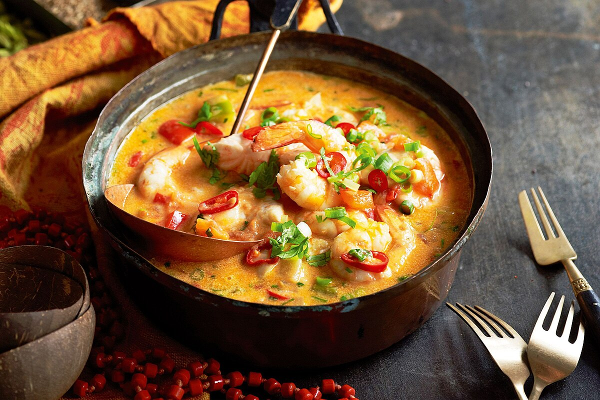

Moqueca

Home
A moqueca de peixe é muito simples de fazer e o resultado é um prato bastante saboroso. Experimente e sirva esta iguaria da culinária angolana, também muito popular no Brasil.
Ingredients
- azeite q.b.
- 4 tomates pelados
- 1 pimento vermelho
- 1 pimento verde
- 300 ml de leite de coco
- 1 c. café de açafrão em pó
- coentros q.b.
Steps
- Quando a cebola estiver tenra, junte os tomates e os pimentos cortados em cubinhos.
- Refogue por mais 5 minutos até os pimentos começarem a ficar tenros.
- Acrescente o leite de coco e o açafrão e envolva.
- Coloque a pescada e o miolo de camarão numa taça.
- Tempere com o sumo de limão e sal.
- Refogue a cebola picada e os dentes de alho picados finamente num fio de azeite.
- Adicione de seguida o peixe o miolo de camarão e coentros picados.
- Tape e deixe cozinhar em lume brando por cerca de 10 minutos.
- Sirva de imediato.